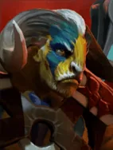
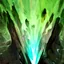

Earth Splitter
Active ability: Activates on Full Mana
Sends forth a jagged crack in front of Elder Titan. After 3 seconds, the crack implodes, stunning while dealing damage to each enemy based on their maximum life. Half of the damage dealt is Magical damage, while the other half is Physical damage.
| ★ | ★★ | ★★★ | |
|---|---|---|---|
| STUN DURATION | 1.0 | 1.5 | 2.0 |
| BASE DAMAGE | 20 | 25 | 30 |
| HEALTH PERCENTAGE DAMAGE | 3 | 4 | 6 |
| RADIUS | 250 | ||
| Cooldown (s) | 60 | ||
| Mana cost | 100 | ||
That which he created, the titan tears asunder.
Stats
| ★ | ★★ | ★★★ | |
|---|---|---|---|
| Health | 900 | 1800 | 3100 |
| Mana | 100 | 100 | 100 |
| Armor | 7 | 7 | 7 |
| Magic resistance | 0% | 0% | 0% |
| Attack damage | 100–130 | 200–260 | 400–520 |
| Attack interval (s) | 1.5 | 1.5 | 1.5 |
| Attack range | 205 | 205 | 205 |
| Move speed | 500 | 500 | 500 |
 God · Overweening Superiority
God · Overweening Superiority
- (2) All allies: skill cooldowns -40%.
- (4) All allies get another -40% skill cooldown. It multiplies with the (2) bonus, for -64% in total.
- (6) All allies: right after casting their skill, the remaining cooldown of that skill and of all their items is cut by 60%.
 Tauren · Totem of the Clan
Tauren · Totem of the Clan
- (2) Summons a Scarecrow Totem that taunts enemies. Its HP is 2.5 x the number of enemy pieces (counting up to 8, so max 20).
- (4) Also summons a Woodpecker Totem (29% chance when an enemy casts: silence 3s + 200 magic damage) and a Horn Totem (10% chance when an enemy attacks: disarm 2s + 100 physical damage). Their HP equals the number of enemy pieces (max 8).
 Druid · Synergy
Druid · Synergy
When you make a ★★★ Druid, the remaining copies of that Druid are not removed from the shared pool.
- (2) Two identical Druid★ combine into a Druid★★. An Io★ plus one Druid★ also combine.
- (4) Two identical Druid★★ combine into a Druid★★★. An Io★★ plus one Druid★★ also combine.
- (6) Two identical Druid★★★ combine into the Altar of Spirits. It gets Altar Power stacks equal to the Druid★★★'s level (5-8) and removes all Druids from the shared pool. Each stack means 10% less damage taken and 10% more damage dealt, multiplying (8 stacks: 43% damage taken, 214% damage dealt). At battle start the Altar shares its stacks with nearby friendly Druids it tethers.